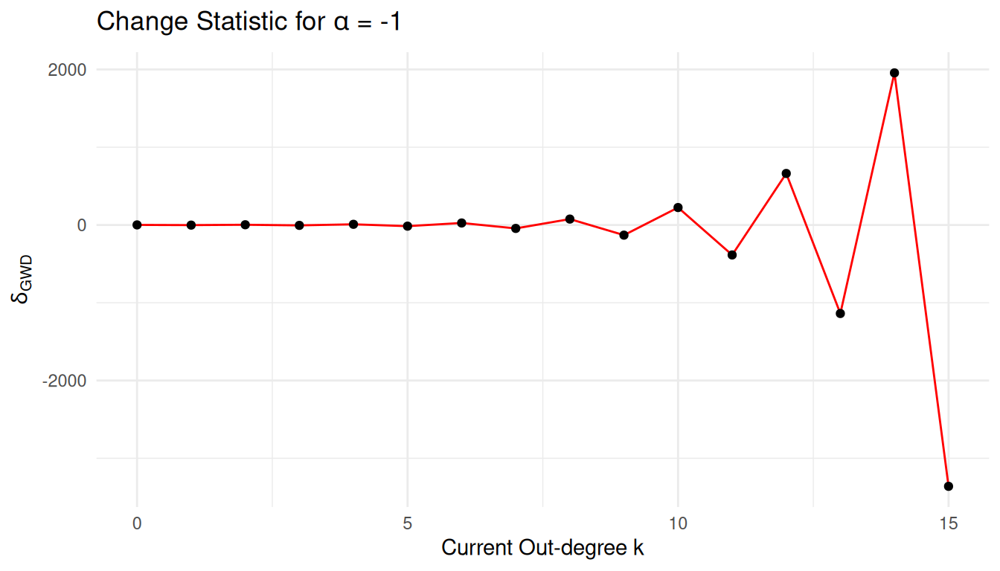
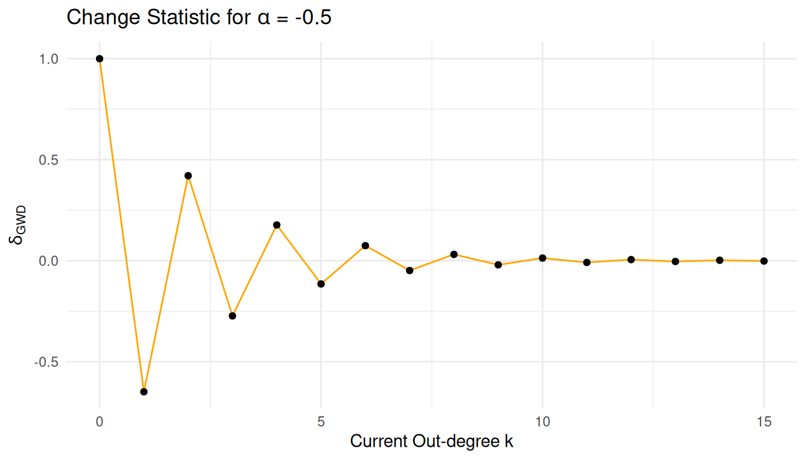
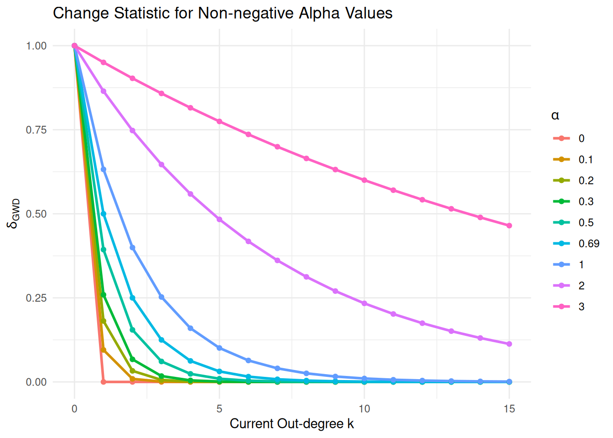
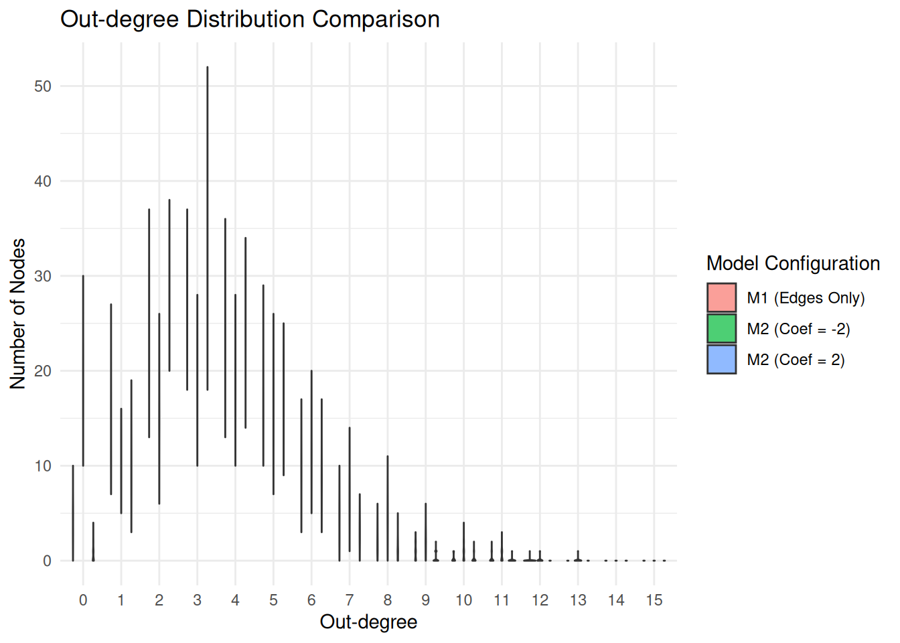

library(ggplot2)
library(dplyr)
library(tidyr)
delta_gwd <- function(k, alpha) {
(1 - exp(-alpha))^k
}
alphas <- c(-1, -0.5, 0, 0.1, 0.2, 0.3, 0.5, log(2), 1, 2, 3)
k_range <- 0:15
plot_data <- expand.grid(k = k_range, alpha = alphas) %>%
mutate(delta = delta_gwd(k, alpha),
alpha_label = factor(round(alpha, 2)))Assignment 2: Geometrically Weighted Terms in ERGMs
Task 1: Geometrically Weighted Terms in ERGMs
(1) Change statistic of gwodegree
The gwodegree effect is defined as: \[s_{GWD}(x, \alpha) = e^\alpha \sum_{k=1}^{n} \{1 - (1 - e^{-\alpha})^k\} D_k^{out}(x)\] where \(D_k^{out}(x)\) is the number of nodes with exactly out-degree \(k\) in network \(x\), and \(\alpha\) is the decay parameter.
i. Derivation of the change statistic \(\delta_{GWD}(k, \alpha)\)
The change statistic \(\delta_{GWD}(k, \alpha)\) is the difference in the network statistic before and after adding a directed edge to a sender node that currently has out-degree \(k\).
Let \(x\) be the initial network and \(x^+\) be the network after the edge is added. The addition of the edge causes \(D_k^{out}\) to decrease by 1 and \(D_{k+1}^{out}\) to increase by 1.
\[\delta_{GWD}(k, \alpha) = s_{GWD}(x^+, \alpha) - s_{GWD}(x, \alpha)\] \[\delta_{GWD}(k, \alpha) = e^\alpha \left[ \left(1 - (1 - e^{-\alpha})^{k+1}\right) - \left(1 - (1 - e^{-\alpha})^k\right) \right]\] \[\delta_{GWD}(k, \alpha) = e^\alpha \left[ 1 - (1 - e^{-\alpha})^{k+1} - 1 + (1 - e^{-\alpha})^k \right]\] \[\delta_{GWD}(k, \alpha) = e^\alpha \left[ (1 - e^{-\alpha})^k - (1 - e^{-\alpha})^{k+1} \right]\]
Factoring out \((1 - e^{-\alpha})^k\): \[\delta_{GWD}(k, \alpha) = e^\alpha (1 - e^{-\alpha})^k \left[ 1 - (1 - e^{-\alpha}) \right]\] \[\delta_{GWD}(k, \alpha) = e^\alpha (1 - e^{-\alpha})^k (e^{-\alpha})\] \[\mathbf{\delta_{GWD}(k, \alpha) = (1 - e^{-\alpha})^k}\]
ii. Plotting the change statistic
# Create the plots
p1 <- plot_data %>% filter(alpha == -1) %>%
ggplot(aes(x = k, y = delta)) +
geom_line(color = "red") + geom_point() +
labs(title = expression(paste("Change Statistic for ", alpha, " = -1")),
y = expression(delta[GWD]), x = "Current Out-degree k") +
theme_minimal()
p2 <- plot_data %>% filter(alpha == -0.5) %>%
ggplot(aes(x = k, y = delta)) +
geom_line(color = "orange") + geom_point() +
labs(title = expression(paste("Change Statistic for ", alpha, " = -0.5")),
y = expression(delta[GWD]), x = "Current Out-degree k") +
theme_minimal()
p1
p2

# Combined plot for non-negative alphas
plot_data %>% filter(alpha >= 0) %>%
ggplot(aes(x = k, y = delta, color = alpha_label, group = alpha_label)) +
geom_line(linewidth = 1) +
geom_point() +
labs(title = "Change Statistic for Non-negative Alpha Values",
y = expression(delta[GWD]), x = "Current Out-degree k",
color = expression(alpha)) +
theme_minimal()
iii. Main takeaways from the figures
The figures illustrate how the decay parameter \(\alpha\) fundamentally alters the “marginal contribution” of adding an edge to a node based on its existing out-degree. This relationship is governed by the derived change statistic \(\delta_{GWD}(k, \alpha) = (1 - e^{-\alpha})^k\).
For non-negative alpha values (\(\alpha \geq 0\)), the change statistic exhibits “diminishing returns.” When \(\alpha > 0\), the base \((1 - e^{-\alpha})\) is a fraction between 0 and 1. Consequently, as the current out-degree \(k\) increases, the value of the change statistic decreases geometrically toward zero. This implies that adding the first edge to a node (where \(k=0\)) contributes significantly more to the total network statistic than adding an edge to a node that is already “active” (high \(k\)).
The specific value of \(\alpha\) controls the “speed” of this decay. A small \(\alpha\) (e.g., 0.1) results in a very rapid decay, where only the first few edges contribute meaningfully to the statistic. As \(\alpha\) increases (e.g., \(\alpha = 3\)), the decay becomes much slower, and the change statistic remains near 1 for a wider range of \(k\). In the limit where \(\alpha \to \infty\), the change statistic becomes a constant 1, effectively turning the gwodegree term into a simple edges count. At \(\alpha = 0\), the statistic becomes a “step function” that only counts whether a node has at least one outgoing edge.
In contrast, negative alpha values (\(\alpha < 0\)) lead to mathematical instability. Because the base \((1 - e^{-\alpha})\) becomes negative, the change statistic oscillates between positive and negative values as \(k\) increases. For \(\alpha = -1\), the magnitude of these oscillations explodes exponentially. In the context of ERGMs, such behavior typically leads to model degeneracy, where the simulation fails to converge because the model’s “preferences” become infinitely large or unstable, making it unsuitable for modeling real-world social processes.
iv. Capturing an activity effect
An “activity” effect in social networks refers to a “rich-get-richer” process, where actors who are already active (those with high out-degrees) are more likely to send additional edges. To capture this specifically using the gwodegree framework, we must consider the relationship between the statistic \(s_{GWD}\) and the model coefficient \(\theta\).
As demonstrated in the plots, the gwodegree statistic with a positive \(\alpha\) is designed to model diminishing returns (anti-centralization). It places higher weight on the formation of edges by low-degree nodes. Therefore, to capture an activity effect (centralization), the decay parameter \(\alpha\) should be chosen as a positive value, but the model should be estimated with a negative coefficient (\(\theta < 0\)).
When the coefficient for gwodegree is negative, the model “penalizes” networks with high gwodegree values. Since a high gwodegree statistic represents a network where edges are spread out evenly among many nodes (maximizing the “utility” of low-degree edges), a negative coefficient rewards the opposite: a network where edges are concentrated in a few highly active hubs.
The choice of the specific \(\alpha\) value determines the “scope” of this activity effect. A small positive \(\alpha\) (e.g., 0.1 to 0.3) creates a very sharp distinction between low-degree and high-degree nodes, focusing the activity effect on the transition from being inactive to active. A larger \(\alpha\) (e.g., 1.0 or higher) smooths this effect, allowing the “activity” incentive to persist even as nodes reach higher degrees. In practice, \(\alpha\) is often fixed to a value like \(\ln(2) \approx 0.69\) to provide a balance that allows for stable estimation while still allowing high-degree nodes to drive the network structure through a negative coefficient.
(2) Effect of the gwodegree coefficient on the out-degree distribution.
i. ERGM on Wave 1 edges
library(network)
library(ergm)
file_path <- "Assignment_02/Glasgow/f1.csv"
adj_m1 <- as.matrix(read.csv(file_path, header = FALSE))
glasgow1 <- as.network(adj_m1, directed = TRUE)
m1 <- ergm(glasgow1 ~ edges)
summary(m1)Call:
ergm(formula = glasgow1 ~ edges)
Maximum Likelihood Results:
Estimate Std. Error MCMC % z value Pr(>|z|)
edges -3.5795 0.0479 0 -74.73 <1e-04 ***
---
Signif. codes: 0 '***' 0.001 '**' 0.01 '*' 0.05 '.' 0.1 ' ' 1
Null Deviance: 22890 on 16512 degrees of freedom
Residual Deviance: 4116 on 16511 degrees of freedom
AIC: 4118 BIC: 4125 (Smaller is better. MC Std. Err. = 0)ii. ERGM on Wave 1 gwodegree \(\{ -2, 2\}\) with fixed \(\alpha = 0.3\)
m2_neg <- ergm(glasgow1 ~ edges + offset(gwodegree(decay = 0.3, fixed = TRUE)),
offset.coef = -2)
m2_pos <- ergm(glasgow1 ~ edges + offset(gwodegree(decay = 0.3, fixed = TRUE)),
offset.coef = 2)
summary(m2_neg)Call:
ergm(formula = glasgow1 ~ edges + offset(gwodegree(decay = 0.3,
fixed = TRUE)), offset.coef = -2)
Monte Carlo Maximum Likelihood Results:
Estimate Std. Error MCMC % z value Pr(>|z|)
edges -3.36225 0.03842 1 -87.51 <1e-04 ***
offset(gwodeg.fixed.0.3) -2.00000 0.00000 0 -Inf <1e-04 ***
---
Signif. codes: 0 '***' 0.001 '**' 0.01 '*' 0.05 '.' 0.1 ' ' 1
Null Deviance: 22890 on 16512 degrees of freedom
Residual Deviance: 4119 on 16510 degrees of freedom
AIC: 4121 BIC: 4129 (Smaller is better. MC Std. Err. = 1.022)
The following terms are fixed by offset and are not estimated:
`offset(gwodeg.fixed.0.3)`
summary(m2_pos)Call:
ergm(formula = glasgow1 ~ edges + offset(gwodegree(decay = 0.3,
fixed = TRUE)), offset.coef = 2)
Monte Carlo Maximum Likelihood Results:
Estimate Std. Error MCMC % z value Pr(>|z|)
edges -3.69322 0.05724 1 -64.52 <1e-04 ***
offset(gwodeg.fixed.0.3) 2.00000 0.00000 0 Inf <1e-04 ***
---
Signif. codes: 0 '***' 0.001 '**' 0.01 '*' 0.05 '.' 0.1 ' ' 1
Null Deviance: 22890 on 16512 degrees of freedom
Residual Deviance: 4115 on 16510 degrees of freedom
AIC: 4117 BIC: 4124 (Smaller is better. MC Std. Err. = 0.5072)
The following terms are fixed by offset and are not estimated:
`offset(gwodeg.fixed.0.3)`
iii. Simulations$
# 1. Simulate 100 networks from each model
sim_m1 <- simulate(m1, nsim = 100)
sim_m2_neg <- simulate(m2_neg, nsim = 100)
sim_m2_pos <- simulate(m2_pos, nsim = 100)
# 2. Function to get degree distributions from a list of simulated networks
get_degree_df <- function(sim_list, model_name) {
# Get out-degrees for every node in every simulated network
# This creates a long data frame for plotting
do.call(rbind, lapply(1:length(sim_list), function(i) {
data.frame(
degree = summary(sim_list[[i]] ~ odegree(0:15)),
deg_val = 0:15,
model = model_name,
sim_id = i
)
}))
}
# 3. Combine data for plotting
plot_df <- rbind(
get_degree_df(sim_m1, "M1 (Edges Only)"),
get_degree_df(sim_m2_neg, "M2 (Coef = -2)"),
get_degree_df(sim_m2_pos, "M2 (Coef = 2)")
)
# 4. Create the violin plot
ggplot(plot_df, aes(x = as.factor(deg_val), y = degree, fill = model)) +
geom_violin(position = position_dodge(width = 0.8), alpha = 0.7) +
labs(title = "Out-degree Distribution Comparison",
x = "Out-degree",
y = "Number of Nodes",
fill = "Model Configuration") +
theme_minimal()